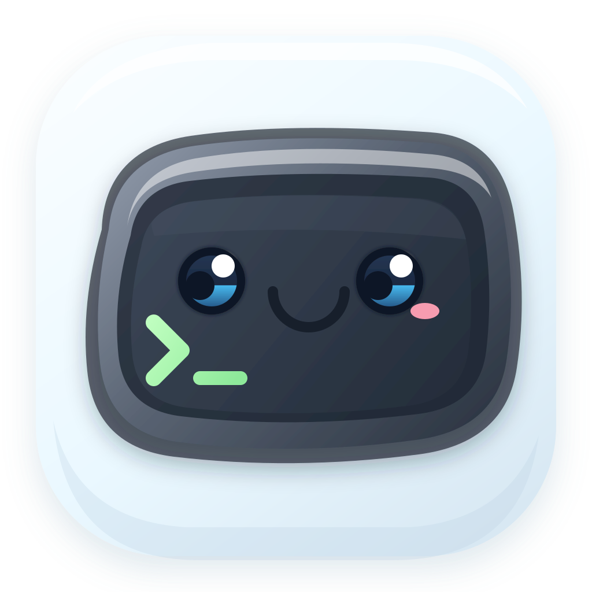

GPU rendering
Dirty-span cell caching keeps the terminal responsive under heavy output.

termyTermy is a fast, minimal terminal emulator. Tabs, splits, search, themes, and optional tmux sessions — in one clean native app.
~/dev/termy ❯ cargo run --release
Compiling termy v0.4.0
Finished `release` in 8.21s
Running `target/release/termy`
~/dev/termy ❯ git status
On branch main
nothing to commit, working tree clean
~/dev/termy ❯
# split pane · tmux
▮ top — 4 procs
cpu 12%
mem 3.1G
net ↓ 40kb/s
# search · ⌘F
3 matches
Dirty-span cell caching keeps the terminal responsive under heavy output.
Pin, reorder, split, resize, and zoom panes without leaving the keyboard.
Find across scrollback instantly, with match highlighting as you type.
Built-in themes with config diagnostics and live reload on save.
Attach, switch, and manage sessions when you need persistence.
Context menus, window controls, and OS integrations that feel right.
Termy is Rust-first. Clone the repo and run the release build — configuration lives in your platform config directory.
Read the docs# from the repository root
❯
cargo run --release -p termy